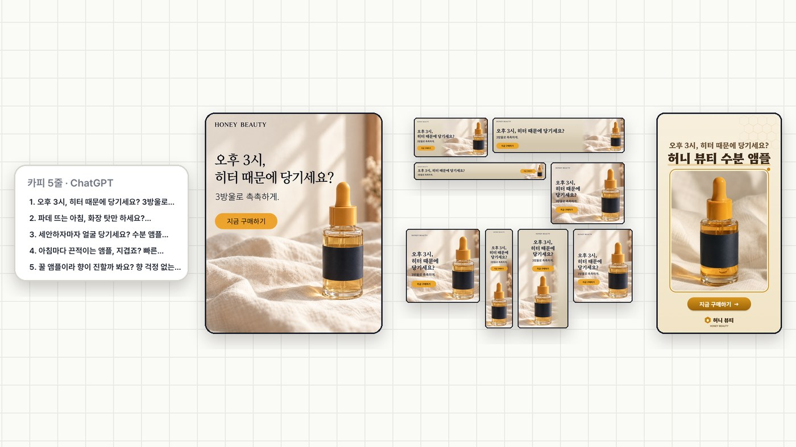
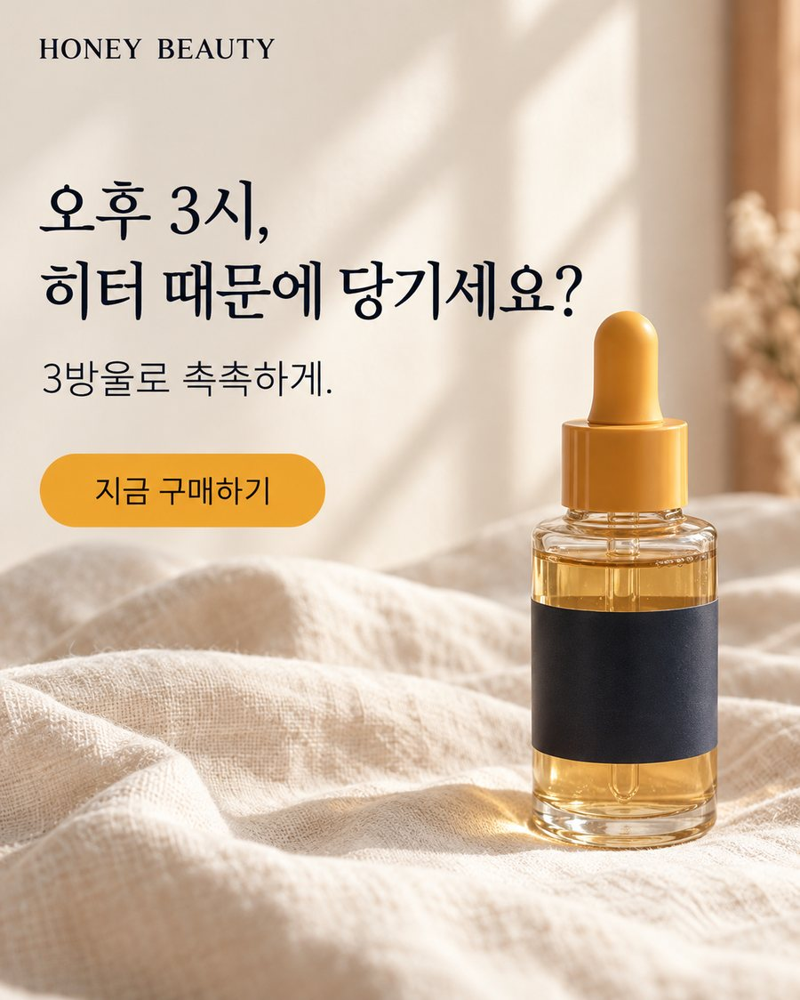
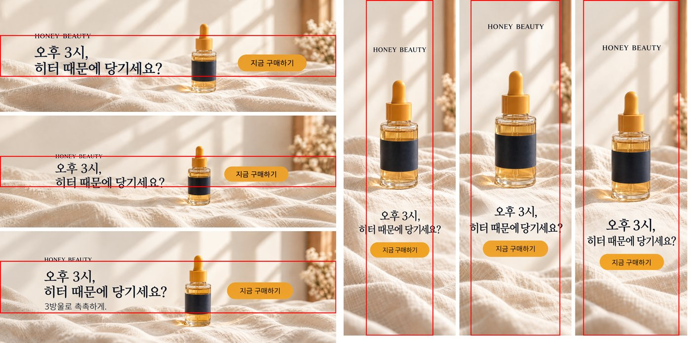
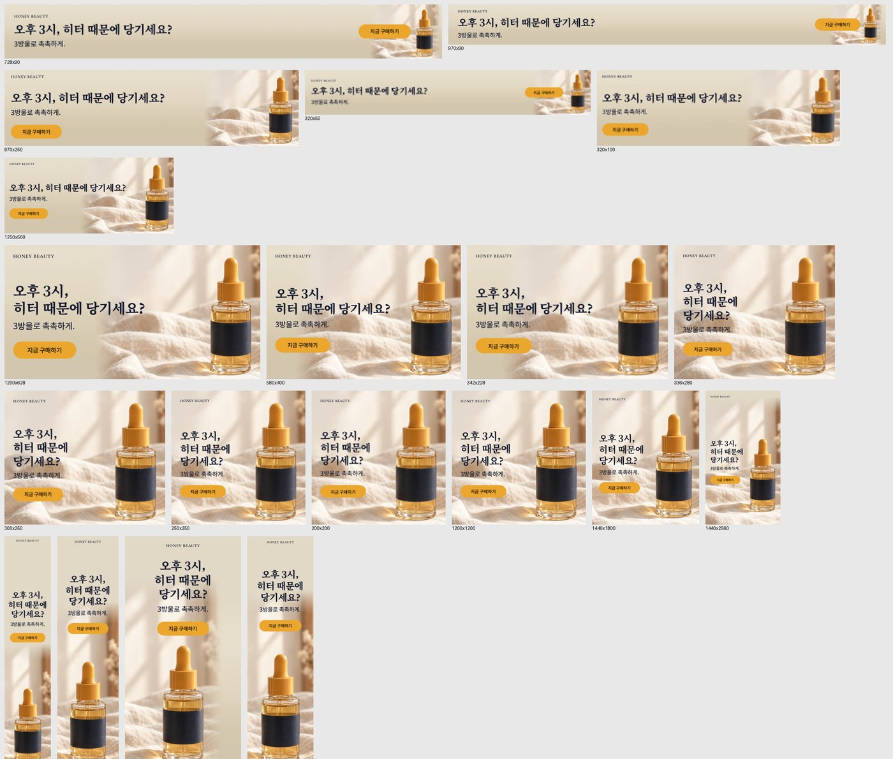
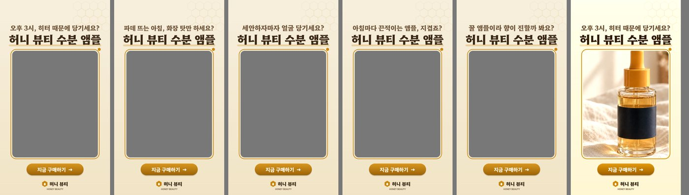

디자이너 없이 광고 소재 한 세트,
AI로 끝내는 6단계
가상 브랜드 '허니 뷰티' 수분 앰플 런칭 소재를 처음부터 끝까지 만들었어요. 카피 5줄, 메인 배너, 사이즈 20종, 숏폼 액자 소재까지요. 영상 속 프롬프트와 요청문 전문, 잘된 결과와 잘린 결과를 그대로 모았어요.

01브랜드 한 장 먼저
같은 요청도 할 때마다 다른 그림이 나와요. 브랜드 규칙을 한 장으로 먼저 붙이면 색과 무드가 고정돼요. 핵심은 색 코드만 적지 말고 "뚜껑은 꿀색"처럼 어디에 쓰는지까지 적는 거예요. 양식 툴과 자세한 비교는 EP.09에 있어요.
첨부한 브랜드 가이드를 읽고, 광고 이미지용 '브랜드 한 장'을 만들어 줘. - 브랜드 색 3개: 이름, 색 코드, 그리고 이미지 속 어떤 물건에 쓰는지(예: 뚜껑, 배경 천, 라벨) - 조명, 배경, 소품 개수, 제품의 실제 크기 - 하지 말 것: 번들거리는 광택, 과한 질감, 제품 과장, 가짜 글자, 없는 로고는 꼭 넣고, 가이드에 있는 금지 사항도 추가 - 가이드에 없는 내용은 지어내지 말고 "확인 필요"라고 적어 줘. - 마지막에 이미지 AI에 그대로 붙일 수 있는 지시문으로 정리해 줘.
02카피 — 리뷰 + 잘된 예시 2개
같은 요청을 6가지 방식으로 3번씩, 18번 돌려 가린 채 채점했을 때 '역할 부여'와 '글자 수 지정'은 그냥 요청보다 나은 게 없었고, 잘된 예시 2개가 1등, 리뷰 붙이기가 2등이었어요(EP.18). 이번엔 둘을 같이 붙였더니, 예시만 붙였을 때보다 뻔한 카피가 4.7개 → 2.0개로 줄었어요(방식마다 3번 · 같은 조건 블라인드 채점).
허니 뷰티 수분 앰플 인스타 광고 카피 5개 써 줘. 아래는 우리 브랜드에서 반응이 좋았던 카피 2개야. 이 말투·길이·구조를 따라 써 줘. 예시 1: 오후 3시, 아직도 얼굴 당기세요? 3방울이면 퇴근까지 촉촉. 예시 2: 파데 뜨는 날, 범인은 화장품이 아니라 속건조예요. 그리고 아래 실제 구매자 리뷰와 제품 특징에서 나온 말을 살려서 써 줘. 각 40자 이내. [리뷰] 1. 세안하고 바로 바르면 당김이 없어져요. 오후 3시에도 안 땡겨요 2. 꿀 냄새 날 줄 알았는데 향이 거의 없어서 좋아요 3. 스포이드로 3방울이면 얼굴 전체 충분 4. 화장 전에 바르면 파데가 안 떠요 5. 끈적임 없이 흡수가 빨라서 아침에 쓰기 좋아요 (… 리뷰 10개 · 제품 특징 3줄)
💡 예시 2개는 클릭률·저장이 제일 좋았던 카피로, 질문형 1 + 상황형 1처럼 구조를 다르게 고르세요. 리뷰와 예시는 이 시험을 위해 만든 예시예요.
1. 오후 3시, 히터 때문에 당기세요? 3방울로 촉촉하게. ← 메인 카피
2. 파데 뜨는 아침, 화장 탓만 하세요? 속건조부터 잡아보세요.
3. 세안하자마자 얼굴 당기세요? 수분 앰플 3방울이면 충분.
4. 아침마다 끈적이는 앰플, 지겹죠? 빠른 흡수에 촉촉함까지.
5. 꿀 앰플이라 향이 진할까 봐요? 향 걱정 없는 무향 수분 케어.
03메인 이미지 — 요소 5개를 먼저 정하기
로고 · 헤드라인 · 서브카피 · 제품 · 구매 버튼, 다섯 개로 정해 두면 사이즈 단계가 쉬워져요. 브랜드 한 장 아래에 붙인 요청이에요. 이번엔 한 번에(48초) 나왔고 문구도 그대로였어요.
인스타 피드용 4:5 세로 광고 배너를 만들어 줘. 요소는 아래 5개만 넣어 줘. - 로고: HONEY BEAUTY (딥 네이비 글자, 왼쪽 위) - 헤드라인: 오후 3시, 히터 때문에 당기세요? - 서브카피: 3방울로 촉촉하게. - 제품: 꿀 앰플 (스포이트 유리병) - 구매 버튼: 지금 구매하기 (꿀색 버튼) 문구는 한 글자도 바꾸지 말고 그대로 넣어 줘. 이 5개 말고 다른 글자는 넣지 마.

04사이즈 20종 — 두 갈래
A. GPT로 새로 그리기 — 원본을 첨부하고 아래 템플릿의 '만들 사이즈'만 바꿔요. 배경까지 자연스럽게 이어 그려 주지만 제품과 글자를 새로 그려요.
[배너 리사이즈 템플릿] 만들 사이즈: [ 728x90, 970x90, 120x600 ] ← 원하는 사이즈만 바꿔 넣기 이 배너를 위 사이즈로 다 바꿔 줘. 이미지 생성으로 사이즈별 배너 이미지를 만들어 줘. 1. 원본과 같은 제품, 같은 색, 같은 글자를 그대로 유지해. 문구는 한 글자도 바꾸지 마. 2. 요소는 5개야: 로고 / 헤드라인 / 서브카피 / 제품 / 구매 버튼. 3. 3:1보다 긴 가로 띠는 3:1로, 1:3보다 긴 세로 띠는 1:3으로 그려. 나중에 가운데를 정확한 사이즈로 잘라 쓸 거야. 그래서 5개 요소를 전부 아래 '안전 영역' 안에만 넣고, 그 밖에는 배경(천·빛)만 이어 그려. [안전 영역 표 — 사이즈가 여기 있으면 이 숫자를 그대로 써] 가로 띠(세로 가운데 띠): 728x90 31% · 970x90 24% · 980x120 31% · 930x180 49% · 970x250 66% · 320x50 40% · 300x50 43% · 320x100 80% 세로 띠(가로 가운데 띠): 120x600 50% · 160x600 68% · 300x1050 73% 표에 없는 띠 사이즈는 가로 띠 = 255 ÷ 가로세로 비율(%), 세로 띠 = 255 × 가로세로 비율(%)로 계산해. 4. 가로 띠는 [로고+헤드라인 왼쪽] [제품 가운데, 띠 높이 안에 들어오게 작게] [버튼 오른쪽]을 한 줄로. 안전 영역이 35%보다 좁으면 서브카피는 빼. 세로 띠는 위에서부터 [로고] [제품] [헤드라인 두 줄] [버튼]을 쌓고, 서브카피는 빼. 헤드라인·버튼 폭은 안전 영역 폭의 80% 이하로. 5. 모든 요소는 안전 영역 가장자리에서 8% 안쪽에. 넘치면 글자를 줄여. 글자·버튼이 안전 영역 밖으로 1px도 나가면 안 돼. 6. 다 만든 뒤 표로 알려 줘: 요청 사이즈 / 그린 비율 / 잘라 쓸 영역.
20개를 10개씩 두 번 돌렸더니 15개는 바로 사용, 아주 긴 띠 5개(728×90 · 970×90 · 320×50 · 120×600 · 160×600)는 로고·글자가 잘렸어요. 10-24에 긴 배너 3개만 따로 돌렸을 땐 다 남았는데, 10개를 한 번에 돌리니 안전 영역을 덜 지켰어요. 잘린 것만 다시 부탁하니 안 잘리는 대신 배너를 작게 줄여 넣고 주변을 흐리게 채워 왔어요. 긴 띠는 적게 나눠 돌리고, 결과는 꼭 눈으로 확인하세요.

B. Claude 에디터로 다시 배치하기 — claude.ai 채팅에 원본을 첨부하고 차례로 보내요. 원본 사진을 그대로 쓰고 로고·카피는 진짜 글자로 다시 넣어서, 모든 사이즈가 정확하고 카피만 바꾸면 전부 반영돼요(배경은 조금 밋밋해요).
이 배너를 창 크기에 맞춰 알아서 다시 배치되는 배너로 만들어 줘. 모서리를 잡고 늘리거나 줄이면 정사각, 가로 띠, 세로 띠 어떤 비율이든 글자, 로고, 제품 이미지가 안 깨지고 안 잘리게. 한 페이지에서 바로 잡고 늘려 볼 수 있게 아티팩트로 만들어 줘.
두 가지만 고쳐 줘. 1. 모서리를 잡고 끌 때, 잡은 모서리의 반대쪽 모서리는 그 자리에 고정되게 해 줘. 2. 끌다가 자주 쓰는 사이즈(1:1, 4:5, 9:16, 1.91:1, 728×90, 160×600, 300×250) 비율 근처에 오면 그 비율로 착 달라붙고, 붙은 동안 배너 위에 '1080×1080'처럼 사이즈 이름 배지를 잠깐 보여 줘. 나머지 디자인과 배치 규칙은 그대로 둬.
아래 20개 사이즈를 사이즈별 PNG로 저장할 수 있게 해 줘. 버튼 하나로 20개를 ZIP 하나에 담아 받게. 200x200, 250x250, 300x250, 336x280, 580x400, 120x600, 160x600, 300x600, 300x1050, 728x90, 970x90, 970x250, 320x50, 320x100, 1440x1800, 1440x2560, 1250x560, 1200x628, 1200x1200, 342x228 나머지 디자인과 배치 규칙은 그대로 둬.
💡 처음 저장할 때 claude.ai가 아티팩트 '게시'(공유 전까지 비공개)와 '파일 저장' 확인을 한 번씩 물어요. 직접 눌러 주세요.

무드 컷 · 시안 → GPT로 새로 그리기 / 실제 제품이 들어가는 집행 소재 · 사이즈가 많은 캠페인 → 에디터로 다시 배치. 그림은 GPT로 만들고 사이즈는 에디터로 맞추면 둘의 장점을 같이 써요.
05숏폼 액자형 소재
액자는 이미지로 뽑지 말고 페이지로 만들어 달라고 해요. 카피를 바꿔도 칸은 그대로고, 영상을 올리면 완성 MP4까지 받아요. 자세한 규격은 EP.17.
인스타 릴스 광고용 액자형 프레임 PNG를 코드로 그려 줘(이미지 생성 말고). 크기 1080x1920 세로. 위쪽에 큰 카피 두 줄 '오후 3시, 히터 때문에 당기세요?' / '허니 뷰티 수분 앰플', 아래쪽에 '지금 구매하기' 버튼과 '허니 뷰티' 로고. 가운데는 세로 영상이 비쳐 보이도록 투명하게 비워 줘. 배경은 크림색. 투명 PNG로 내려받는 버튼도 달아 줘.
여기에 세로 영상을 올리면 이 프레임을 얹은 MP4로 바로 내려받게 해 줘. 그리고 첫 줄 카피를 줄마다 하나씩 여러 개 넣으면, 카피별 프레임 PNG를 한 번에 받을 수 있게 해 줘.

완성 영상은 브라우저가 실시간으로 녹화해요(30초 영상이면 30초). 이번 결과는 MP4 · H.264 1080×1920 · AAC였어요. 화질이 편집 툴보다 조금 떨어질 수 있어서, 본 집행은 액자 PNG를 편집 툴에서 영상 위에 얹는 쪽이 안전해요.
06올리기 전 검수 4가지
- 제품 — 이미지 AI는 제품을 새로 그려요. 실제 제품 광고라면 제품 컷은 원본으로 바꿔 끼우세요.
- 문구 — "한 글자도 바꾸지 마"라고 써도 가끔 바뀌어요. 카피 원문과 한 줄씩 대조하세요.
- 규격 — 구글은 공식 도움말, 메타는 광고 가이드, 네이버 GFA는 관리자 화면에서 최신 사이즈를 확인하세요.
- 광고에 못 쓰는 말 — 화장품이면 '치료' · '재생'처럼 의약품으로 들릴 수 있는 말은 쓸 수 없어요(화장품법 제13조). AI로 1차로 거르고 최종 판단은 담당자가 하세요.
나머지는 그대로 두고, 아래만 고쳐 줘. 1. (고칠 것)
07출처 · 시험 조건
- 결과는 2026-10-24~26 ChatGPT(Plus) · claude.ai(Opus 5.5)로 직접 돌려 본 값이에요. AI 작업 시간 약 23분은 사람이 요청을 쓰고 결과를 보는 시간을 뺀 값이에요.
- 카피 비교는 방식마다 3번, 모델 하나, AI 채점이에요. 다른 모델에선 달라질 수 있어요.
- Google Ads 도움말 — 이미지 광고 사이즈 · Meta 광고 가이드 · 네이버 GFA는 관리자 화면에서 최신값 확인
- 화장품 표시·광고: 화장품법 제13조 · 시행규칙 별표 5 · 식약처 2025-08 온라인 점검 보도
- 영상과 이미지 속 '허니 뷰티'는 가상 브랜드예요. 유튜브 썸네일 속 인물은 AI로 만든 가상 인물이에요.